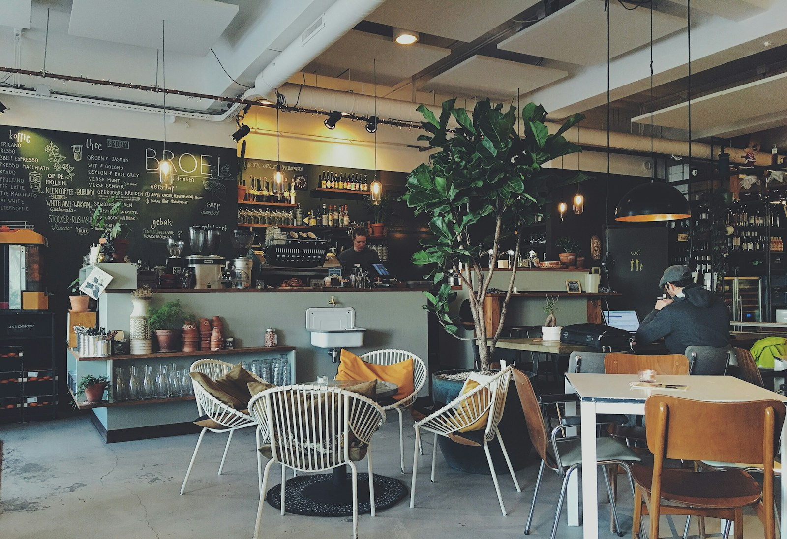

Café & Bistro · Ingelheim
Henry's am Marktplatz.
Ein Kaffee zwischendurch, eine Kleinigkeit zum Mittag, ein Treffen mit Freunden – mitten in Ingelheim, direkt am Marktplatz.

Beispielbild Beispielbild
BeispielbildMarktplatz 1055218 Ingelheim am Rhein
 Beispielbild
Beispielbild
Beispiel-Aktion
Diese Woche bei Henry's
Hier kann das Café selbst eine Tagesempfehlung, ein saisonales Angebot oder eine Veranstaltung eintragen – zum Beispiel „Neu: Herbstkuchen" oder „Am Samstag Live-Musik".
Gäste sehen es sofort, wenn sie die Seite öffnen. Der Text oben ist nur ein Platzhalter.
Entdecken